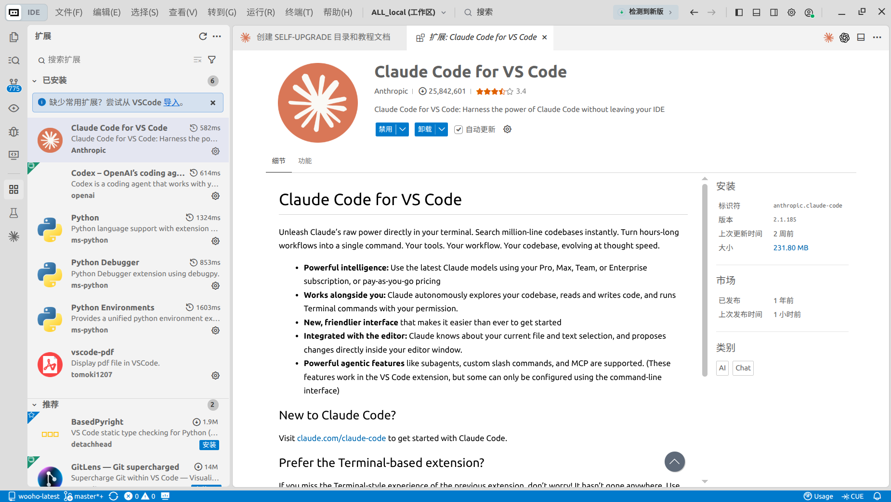
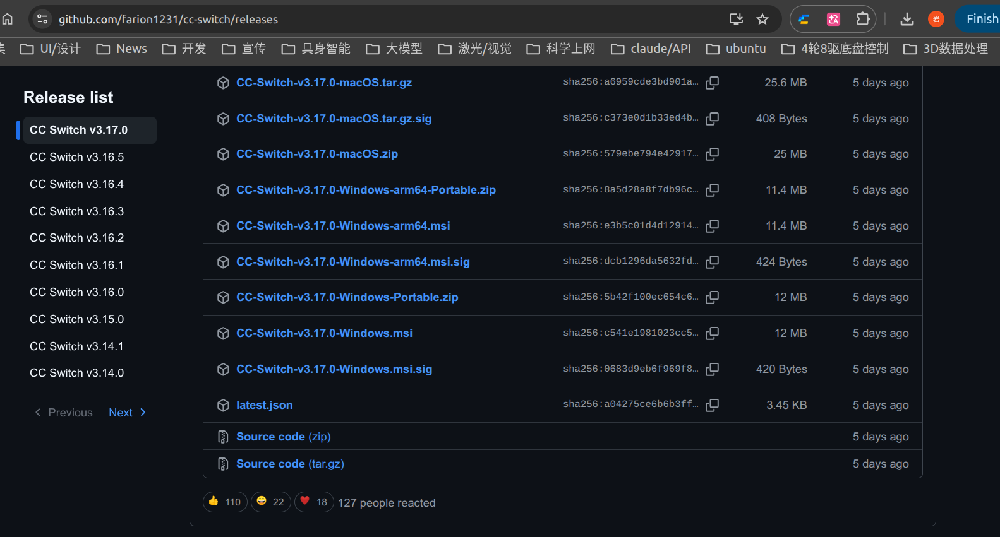
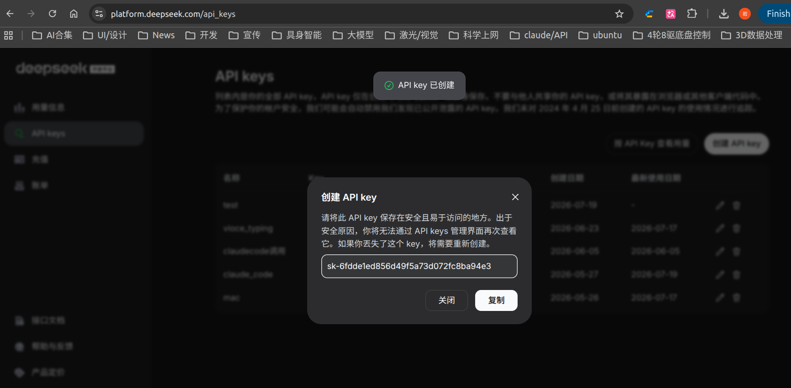
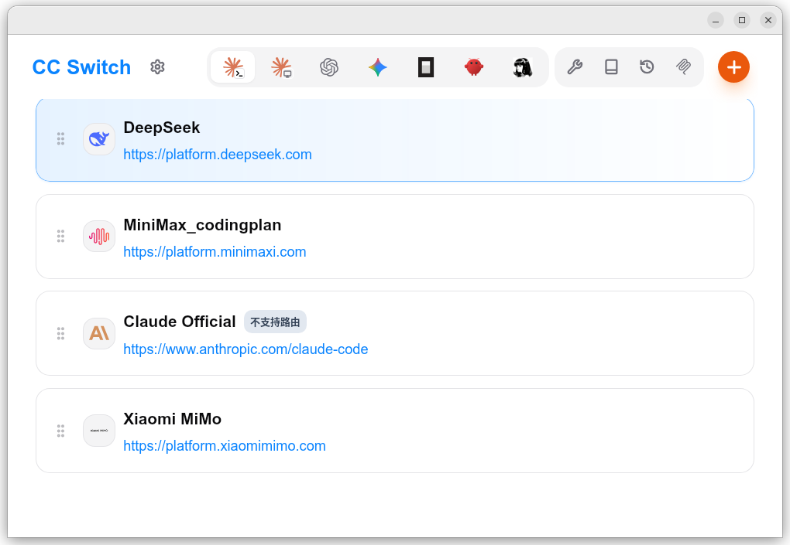
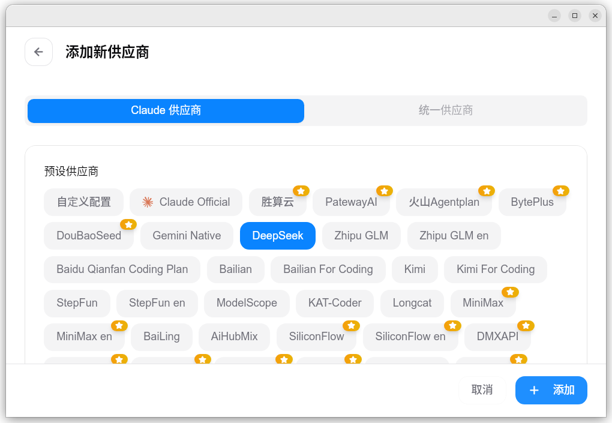
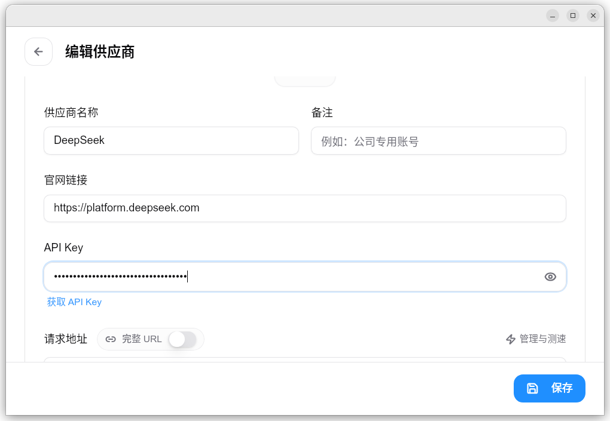

手把手教程——全程点鼠标、零命令行，把 Claude Code 的后台切到便宜很多的 DeepSeek API
cc-switch 把 Claude Code 的后台地址换成 DeepSeek，插件面板无需登录就能直接用。
全程约 15~25 分钟，不需要编程基础，不需要碰命令行。
Trae 是字节跳动推出的免费 AI 代码编辑器，原生支持中文界面，对国内用户更友好。
.exe 安装包）。这一步装的是图形聊天面板——你后面用的就是它。Trae 底层兼容 VSCode，插件安装方式完全一致。
extensionMarketUrl，将其改为 VS Code 官方市场地址 https://marketplace.visualstudio.com/vscode，然后重新搜索安装。
Ctrl + Shift + X 直接打开。Claude Code for VS Code。
▲ 图 1：Trae 扩展面板 — 搜索 Claude Code for VS Code，找到 Anthropic 发布者并安装；安装完成后右上角出现 ✱ 星形图标
C:\Users\你的用户名\.claude\，先关掉面板，后面用。
cc-switch 是一个开源的带图形界面的小工具，专门给 Claude Code 切换后台供应商用。由 GitHub 上的 farion1231 开发维护。
CC-Switch-v3.17.0-Windows-Portable.zip。CC-Switch.exe 运行。
▲ 图 2：cc-switch Releases 页面 — 下载 CC-Switch-v3.17.0-Windows-Portable.zip
这是你在 DeepSeek 的「门禁卡 + 付费凭证」。
claude-code）。sk-xxxxxxxx——马上复制，存到记事本里。
▲ 图 3：创建成功弹窗 — ⚠️ 立即复制密钥！关掉后就再也看不到了。复制后保存到记事本里。
回到 cc-switch 的窗口。cc-switch 已经内置了 DeepSeek 的配置模板，你只需要填 API Key 就行，Base URL 和模型名都会自动填好。
sk-xxxx……（注意：整串完整，别多带空格或换行）。
▲ 图 4：cc-switch 主页面 — 点右上角「+」添加第三方模型供应商

▲ 图 5：点击「+」后 — 在列表中选中 DeepSeek 模板

▲ 图 6：选择 DeepSeek 后 — 在 API Key 栏粘贴你的 sk-xxxx，其他字段自动填好，点测试通过后再点启用
C:\Users\你的用户名\.claude\settings.json。这份文件正是 Claude Code 插件读取的那份，所以配一次，插件面板就能用。
cc-switch 启用之后，直接在 Trae 里打开 Claude Code 插件即可使用，不需要额外操作。
它正常回复了 → 🎉 成功！你现在用的就是 DeepSeek 后台，可以开始干活了。